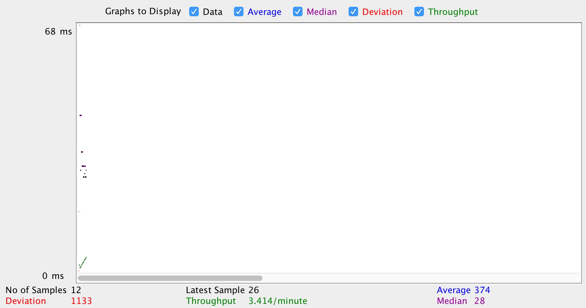
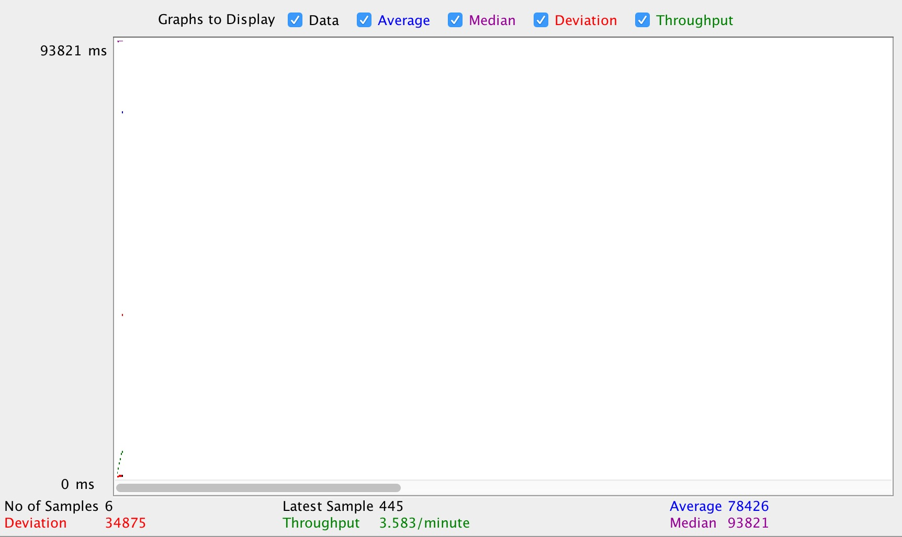
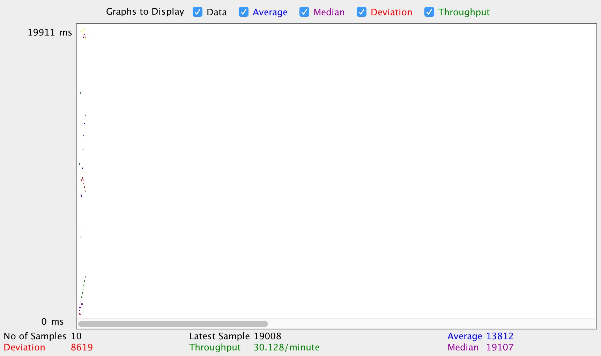

| Single-instance version cases |
Graph Results Screenshot |
Average Query Time(ms) |
Average Search Servlet Time(ms) |
Average JDBC Time(ms) |
Analysis |
| Case 1: HTTP/1 thread |
 |
25509341 * 10^-6 |
22916329 * 10^-6 |
2593012 * 10^-6 |
Servlet cost more time than JDBC in my case |
| Case 2: HTTP/10 threads |
 |
25508368.2 * 10^-6 |
22915299.79 * 10^-6 |
2593068.45 * 10^-6 |
The average time of servlet cost more time than JDBC in my case |
| Case 3: HTTPS/10 threads |
 |
25822118.4 * 10^-6 |
22929019.98 * 10^-6 |
2893098.49 * 10^-6 |
HTTPS costs a little bit more than HTTP, but not too much. So it's better to use HTTPS. |
| Case 4: HTTP/10 threads/No prepared statements |
 |
27929424.9 * 10^-6 |
22910211.98 * 10^-6 |
5019212.99 * 10^-6 |
Without prepared statement, the time for JDBC increased a lot because the queries need to be loaded again when used. Using prepared statements can shorter the time because the queries will be stored in the database |
| Case 5: HTTP/10 threads/No connection pooling |
 |
28929424.9 * 10^-6 |
26910211.98 * 10^-6 |
2019212.99 * 10^-6 |
Without connection pooling, the time cost for servlet increased a lot because need more time to talk to server |
| Scaled version cases |
Graph Results Screenshot |
Average Query Time(ms) |
Average Search Servlet Time(ms) |
Average JDBC Time(ms) |
Analysis |
| Case 1: HTTP/1 thread |
 |
22902353 * 10^-6 |
23913329 * 10^-6 |
2493010 * 10^-6 |
the scaled version does not run faster compared to the single instance version because this is only 1 thread. There is no need to balance the load |
| Case 2: HTTP/10 threads |
 |
21238367.7 * 10^-6 |
18915299.29 * 10^-6 |
2323068.41 * 10^-6 |
the scaled version runs a little bit faster in this case because the load is distributed into 2 backends. |
| Case 3: HTTP/10 threads/No prepared statements |
 |
29929424.9 * 10^-6 |
25910211.98 * 10^-6 |
4019212.92 * 10^-6 |
Without prepared statement, the time for JDBC increased a lot because the queries need to be loaded again when used. Using prepared statements can shorter the time because the queries will be stored in the database |
| Case 4: HTTP/10 threads/No connection pooling |
 |
26921423.5 * 10^-6 |
24910211.24 * 10^-6 |
2011212.35 * 10^-6 |
Without connection pooling, the time cost for servlet increased a lot because need more time to talk to server, but the average time is still less than the single instance version because of load balancing |